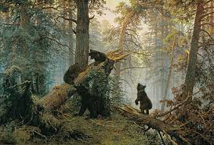

Ива́н Ива́нович Ши́шкин — русский художник-пейзажист, живописец, рисовальщик и гравёр-аквафортист. Представитель Дюссельдорфской художественной школы. Академик, профессор, руководитель пейзажной мастерской Академии художеств.
Картины
Утро в сосновом лесу

«Утро в сосновом лесу» — картина русских художников Ивана Шишкина и Константина Савицкого. Савицкий написал медведей, но коллекционер Павел Третьяков стёр его подпись, так что автором картины часто указывается один Шишкин.
Корабельная роща
Творческая деятельность Ивана Ивановича Шишкина была завершена величественной композицией «Корабельная роща» (1898, Государственный Русский музей), в которой опыт и мастерство художника выразили неизгладимые впечатления детства.